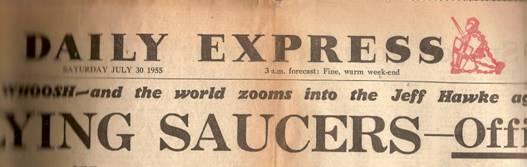

Dessin de l'observation du 3 CUFOS
A Stockton (Ohio), dans les phares de leur voiture, Mme Symmonds aperçoit sur le bas-côté
de la route 4 Êtres qu'elle pense Être d'abord des animaux, d'une taille allant de 1,05 m et 1,20 m, vêtus d'une
cape gris verdâtre sans boutons. L'un d'entre eux, se tient penché, un bâton (piqué au sol ?) entre ses mains. Leurs
bras sont trop longs pour leur taille, avec de longs doigts griffus. Les épaules sont carrées, larges et robustes.
Ils ont une grosse tête pour leur corps, des yeux énormes sans paupières réfléchissant une lumière rougeâtre, un nez
long pointu et crochu, une petite bouche sans lèvres. Lorsque la voiture approche l'un d'eux s'écarte, se tourne
vers elle, les bras levés. Il porte un genre de chapeau mou à bords rabattus. Aucun ovni n'est observé Davis & Bloecher 1978, pp. 149-160Bowen 1969, p.181Inforespace n° 50, mars 1980, pp. 23-24.
Les travaux du "Ranch" a Groom Lake sont terminés et ont coûté 800 000 $.
Il consiste en 3 hangars, une tour de contrôle, le hall du mess, une piste, et de nombreux mobile-homes Rich, Ben: Skunk Works, 1994.
A Cincinatti (Ohio), Ed Mootz
travaille dans son jardin lorsque quelques gouttes d'une pluie rouge et
chaude tombent sur ses bras et ses mains. En quelques instants, il se trouve au milieu d'une pluie rouge. Au-dessus de lui, dépassant d'autres, un nuage particulier : Ce n'était pas un gros nuage, mais
il avait certainement des couleurs étranges. Il était vert sombre, rouge et rose, évalué à 1000 pieds
d'altitude. Ce qui est particulièrement étrange est que la pluie paraît concentrée sur son jardin, sur son pêcher en
particulier. La pluie est d'un rouge, huileux, collant, comme du sang : Le
rouge qu'il avait [le nuage] correspondait à la couleur de la substance qui me toucha ainsi que l'arbre. Je
pouvais voir que ce qui pleuvait sur moi venait de ce nuage. Toute vie végétale ayant été touchée meurt peu
après (son pêcher le jour suivant). Une équipe de l'USAF arrive rapidement pour prendre
des échantillons. Les résultats ne sont pas connus Stringfield, L. H.: Orbit (CRIFO), 1955-09, p.
4Cincinatti Post, 3 février 1975 < Le Grand livre du mystérieux, sélection du Reader's Digest.
ou
Couverture du Daily Express le 30

Le 1er prototype de U-2 est amené à Groom
Lake depuis Lockheed Skunk Works à Burbank via un avion de transport C-124 Rich, Ben: Skunk Works, 1994Peebles, Curtis, Dark Eagles, Presido Press, 1995.
A Columbus (Nebraska), observation Cas
Blue Book n° 3673 non résolu.